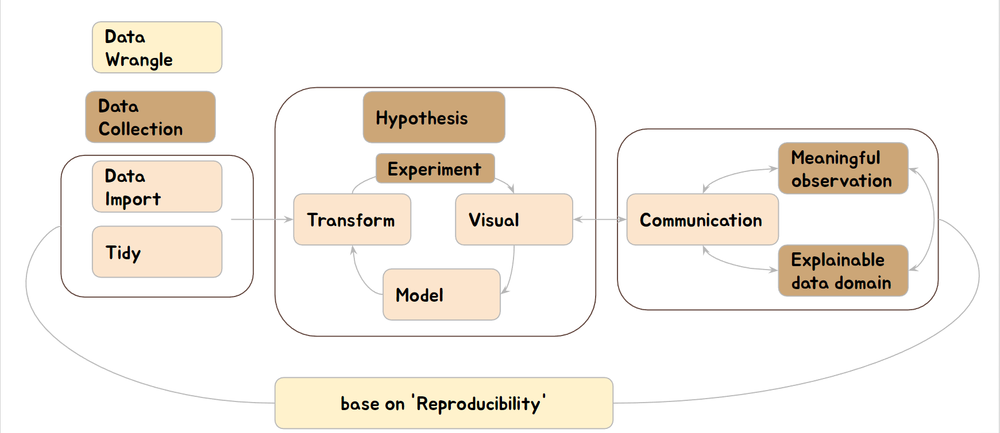

보건학데이터과학 실습
소개
보건학
보건학은 인간과 그들의 사회의 건강을 향상시키기 위한 과학입니다. 보건학은 의학에서 사회과학에 이르기까지 여러 학문과 밀접하게 연관되어 있습니다. 따라서, 다학제적 접근법은 보건학 전문가에게 가장 중요한 기술 중 하나입니다.
보건학 데이터과학
데이터 과학은 크게 데이터를 수집, 처리, 분석하고, 그 결과를 해석하여 의사결정이나 예측, 분류 등의 작업을 수행하는 분야입니다. 이를 위해 프로그래밍, 통계학, 머신러닝 및 도메인 지식을 종합적으로 활용합니다. 이러한 기술을 보건학에 접목시키는 것이 보건학 데이터과학입니다.
보건학 데이터과학의 주요 특징은 다음과 같습니다:
- 다양한 데이터의 수집 및 관리:
- 보건학에서는 환자 기록, 임상 데이터, 역학 조사 데이터, 환경 데이터 등 다양한 유형의 데이터를 다룹니다. 이러한 데이터의 효율적인 수집과 관리는 보건학의 데이터과학에서 중요한 부분을 차지합니다.
- 통계 및 머신러닝의 적용:
- 공공보건의 문제를 해결하기 위해, 통계적 방법과 머신러닝 기술을 사용하여 데이터에서 통찰력을 얻거나 예측 모델을 만드는 작업을 수행합니다.
- 데이터 시각화:
- 복잡한 보건 데이터를 쉽게 이해하고 해석하기 위해 시각화 기술을 사용합니다. 이를 통해 정책 결정자나 일반 대중에게 데이터를 효과적으로 전달할 수 있습니다.
- 재현성 및 공유 가능한 연구:
- 보건학 데이터과학에서는 연구 결과의 재현성을 보장하고, 연구 결과를 다른 연구자와 공유할 수 있도록 투명한 방법을 추구합니다.
- 도메인 지식:
- 보건학 데이터과학자는 단순히 데이터과학의 기술만을 가지고 있는 것이 아니라, 보건학에 대한 깊은 이해도 필요합니다. 이를 통해 데이터를 올바르게 해석하고, 실제 보건 문제에 적절한 솔루션을 제시할 수 있습니다.
보건학 데이터 과학, 과학이 되려면
과학에서의 제현성 과학에서의 재현성은 연구 결과를 다른 연구자들이 동일한 조건 하에서 반복해서 얻을 수 있는지의 여부를 나타내는 중요한 원칙입니다. 재현성은 과학적 연구의 진정성과 신뢰성을 평가하는 기준 중 하나로 간주됩니다.
보건학 데이터과학이 과학의 기준에 부합하려면 다음과 같은 재현성 요소들을 갖추어야 합니다
- 데이터의 접근성:
- 연구에 사용된 원본 데이터는 공개되어야 하며, 연구를 재현하려는 다른 연구자들이 접근할 수 있어야 합니다. 당연히 개인정보 보호와 관련된 법률 및 규정을 준수하면서, 필요한 경우 익명화 또는 변조된 형태로 데이터를 공개해야 합니다.
- 분석 코드 및 소프트웨어의 공개:
- 연구에 사용된 데이터 처리, 분석, 시각화 등의 코드와 사용된 소프트웨어의 버전 정보도 공개되어야 합니다.
- 분석 방법론의 명확성:
- 사용된 통계적 방법, 머신러닝 알고리즘, 모델링 접근법 등이 명확하게 기술되어야 합니다.
- 외부 변수 및 제어:
- 연구 과정에서 영향을 미칠 수 있는 외부 변수들에 대한 정보와 그것들을 어떻게 제어했는지에 대한 정보가 필요합니다.
- 결과의 재현 가능성 평가:
- 가능한 경우, 연구 결과의 재현 가능성을 평가하기 위해 독립된 데이터셋이나 방법론을 사용하여 검증을 시도해야 합니다.
- 연구 환경의 명세:
- 연구가 수행된 하드웨어 및 소프트웨어 환경, 그리고 이를 설정하기 위한 파라미터 등도 기록되어야 합니다. 이는 특히 계산적으로 복잡한 모델이나 시뮬레이션을 다룰 때 중요합니다.
- 피어 리뷰:
- 보건학 데이터과학 연구의 결과는 동료 평가 과정을 거쳐 검증되어야 합니다. 피어 리뷰는 연구의 품질과 재현성을 높이는 데 중요한 역할을 합니다.
정리하면 아래와 같은 흐름데로 연구하게 됩니다.
 이 튜토리얼에서는 R, Rstudio, markdown, Shiny server, PostgreSQL 및 github를 사용할 것입니다. R은 무료 오픈 소스 통계 언어로, 데이터 과학 분야에서 널리 사용됩니다. 가장 중요한 참고 자료는 Rafael A. Irizarry의 책과 Hadley Wickham의 책입니다. 아래와 같습니다.
참고 books
| title | authos | url |
|---|---|---|
| Introduction to Data Science with R | Rafael A. Irizarry | https://rafalab.github.io/dsbook/ |
| R for Data Science | Garrett Grolemund, Hadley Wickham | https://r4ds.had.co.nz/index.html |
- I hope you will get valuable experience with me.
그럼 시작하겠습니다.!!! jinha